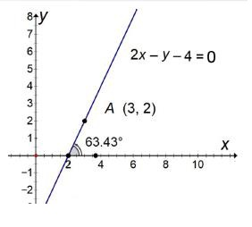

Determinación de la ecuación de la recta.
Forma punto –pendiente (forma común o simplificado)
Lalínearectasedefinecomoladistanciamáscortaentredospuntos. Analíticamente la línea recta es una ecuación de primer grado con dos variables que, gráficamente, se define como el lugar geométrico de la sucesión de puntos, tales que tomados dos puntos cuales quiera diferentes 𝑃1(𝑥1,𝑦1) 𝑦 𝑃2(𝑥2,𝑦2) del lugar, el valor de la pendiente m,es siempre constante.
Forma Punto –Pendiente (Forma común o simplificada)
Para determinar la ecuación de la recta se debe de conocer las coordenadas de uno de sus puntos y su ángulo de inclinación o pendiente. La recta que pasa por el punto 𝑃1𝑥1,𝑦1cuya pendiente es m, satisface la ecuación: 𝒚−𝒚𝟏=𝒎(𝒙−𝒙𝟏)
Ejemplo 1: Encuentra la ecuación de la recta y el ángulo de inclinación de la recta que pasa por el punto 𝑨𝟑,𝟐y la pendiente 𝒎=𝟐
1.Identificar los datos que se muestran en el ejercicon a partir del punto dado 𝐴3,2𝑠𝑒𝑡𝑖𝑒𝑛𝑒𝑥1=3𝑦𝑦1=2 valor de la pendiente 𝒎=𝟐
2. Sustituir en la ecuación de la forma punto-pendiente 𝒚−𝒚𝟏=𝒎(𝒙−𝒙𝟏) 𝒚−𝟐=(𝟐)(𝒙−𝟑)
Resolver las operaciones indicadas
𝒚−𝟐=𝟐𝒙−𝟔
𝒚−𝟐=𝟐𝒙−𝟔
𝒚=𝟐𝒙−𝟔+𝟐
Reducir términos semejantes
𝒚=𝟐𝒙−𝟒
Forma común de la ecuación de la recta
Si la ecuación 𝒚=𝟐𝒙−𝟒se iguala a cero se obtiene
𝟐𝒙−𝒚−𝟒=𝟎Forma general de la ecuación general de la recta.
3. Para determinar el ángulo de inclinación sustituimos en la ecuación
𝜃=𝑎𝑟𝑐tan𝑚𝑜𝑏𝑖𝑒𝑛𝜃=𝑡𝑎𝑛−1𝑚
𝜃=𝑎𝑟𝑐tan2
𝜃=63.43°𝑒𝑥𝑝𝑟𝑒𝑠𝑎𝑛𝑑𝑜 𝑒𝑙 𝑟𝑒𝑠𝑢𝑙𝑡𝑎𝑑𝑜 𝑒𝑛 𝑠𝑖𝑠𝑡𝑒𝑚𝑎𝑠 𝑒𝑥𝑎𝑔𝑒𝑠𝑖𝑚𝑎𝑙 𝑠𝑒𝑡𝑖𝑒𝑛𝑒 𝑞𝑢e
𝜽=𝟔𝟑°𝟐𝟔′𝟓.𝟖𝟐"
Ejemplo 2. Encuentra la ecuación de la recta y el ángulo de inclinación de la recta que pasa por el punto
𝐴(2,−4) cuya pendiente es igual a −1/3
A partir de la información dada, las coordenadas del punto 𝑃1,(𝐴2,−4),𝑥1=2𝑦 𝑦1=−4
Y sabiendo que la 𝑚=−1/3sustituimos en la fórmula.
𝒚−𝒚𝟏=𝒎(𝒙−𝒙𝟏)
𝒚−(−𝟒)=−𝟏𝟑(𝒙−𝟐)Realizamos las operaciones indicadas.
(𝒚+𝟒)=−𝟏/𝟑(𝒙−𝟐)
(3)𝒚+𝟒)=−𝟏(𝒙−𝟐)
𝟑𝒚+𝟏𝟐=−𝒙+𝟐 Igualamos a cero.
𝟑𝒚=−𝒙+𝟐−𝟏𝟐
𝟑𝒚=−𝒙−𝟏𝟎
𝒚=−𝒙−𝟏𝟎𝟑=−𝒙𝟑−𝟏𝟎𝟑
𝒙+𝟑𝒚+𝟏𝟐−𝟐=𝟎 Reducimos términos semejantes
𝒙+𝟑𝒚+𝟏𝟎=𝟎 Ecuación de la recta
Calculamos el ángulo de inclinación con la fórmula 𝜽=𝒂𝒓𝒄𝒕𝒂𝒏𝒎
Sustituimos en la ecuación. 𝜽=𝒂𝒓𝒄𝒕𝒂𝒏−𝟏𝟑,𝜽=−𝟏𝟖.𝟒𝟑°=−𝟏𝟖°𝟐𝟔′𝟓.𝟖𝟐“
Al ser un ángulo negativo debemos de restarlo a 180°así que:
∝=𝟏𝟖𝟎°−𝟏𝟖°𝟐𝟔′𝟓.𝟖𝟐“=𝟏𝟕𝟗°𝟓𝟗′𝟔𝟎−18°26′5.82=𝟏𝟔𝟏°𝟑𝟑′𝟓𝟒.𝟏𝟖"